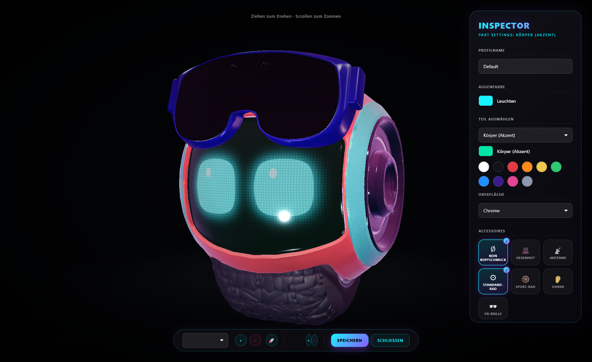

1Installation
Lade OptiBot_Setup.exe herunter und starte sie. Der Setup-Assistent führt dich durch die Installation — du kannst dabei Verknüpfungen anlegen und den Autostart aktivieren, damit OptiBot direkt mit Windows startet.
- OptiBot wird nach %LocalAppData%\Programs\OptiBot installiert — es werden keine Systemordner verändert.
- Windows fragt beim Start von OptiBot nach Administrator-Rechten. Das ist notwendig, damit OptiBot deinen Arbeitsspeicher wirklich freiräumen und Energieprofile umschalten darf.
- Falls der SmartScreen-Filter beim ersten Start warnt: „Weitere Informationen" → „Trotzdem ausführen". Die Warnung erscheint bei neuen, noch unbekannten Programmen.
2Erste Schritte
Nach dem Start erscheint OptiBot auf deinem Desktop und ein Icon im Infobereich der Taskleiste (neben der Uhr).
- Bewegen: Halte den Bot einfach gedrückt und ziehe ihn dorthin, wo er wohnen soll. Er merkt sich seine Position.
- Streicheln: Ein kurzer Klick — er freut sich mit Herzchen-Augen.
- Schnell-Optimierung: Ein Doppelklick räumt sofort deinen RAM auf. Der Bot zeigt dabei auf seinem Display, was er gerade tut, und feiert danach mit einem Freudentanz.
- Display wechseln: Mit dem Mausrad über dem Bot blätterst du zwischen Gesicht, CPU-, RAM- und GPU-Anzeige.
- Verstecken/Zeigen: Ein Klick auf das Taskleisten-Icon blendet den Bot aus oder ein — die Optimierung läuft im Hintergrund weiter.
3Die Smart Engine
OptiBot beobachtet, welche Programme laufen, und schaltet dein System automatisch in den passenden Modus:
- Play-Modus (magenta): Ein Spiel wurde erkannt. Maximale Leistung, RAM wird freigeräumt, störende Hintergrunddienste pausieren.
- Work-Modus (bernstein): Kreativ- oder Arbeits-Software läuft (z. B. Blender, Adobe, Visual Studio). Volle Leistung für deine Arbeit, Spiele im Hintergrund werden gedrosselt — nicht geschlossen.
- Auto-Modus (cyan): Alltag. Ausbalanciertes Energieprofil, alle Dienste normal.
Während einer Optimierung läuft auf dem Gesichtsdisplay des zuständigen Bots ein Status-Text mit, und die Augenfarbe zeigt jederzeit den aktiven Modus. Es gibt nur eine einzige Erkennung im Hintergrund — alle Bots mit derselben Rolle zeigen deshalb immer denselben Modus, nie widersprüchliche Zustände.
Alle Optimierungen sind bewusst nicht-invasiv: OptiBot schließt keine offenen Programme und löscht keine Caches, die gerade benutzt werden. Stattdessen wird Speicher aufgeräumt und die Priorität von Hintergrund-Prozessen angepasst — ein spürbarer Boost, ohne Risiko für ungespeicherte Arbeit.

4OptiBot Studio
Das Studio ist deine Tuning-Werkstatt. Öffne es per Doppelklick auf das Taskleisten-Icon oder über das Menü („OptiBot Studio öffnen").
- Teile lackieren: Klicke ein Körperteil direkt am 3D-Modell an (oder wähle es im Panel) und such dir eine Farbe aus — Änderungen erscheinen sofort auf dem echten Bot.
- Accessoires: Ziehe Hexenhut, Antenne, Ohren, VR-Brille oder ein anderes Rad einfach per Drag & Drop auf den Bot.
- Materialien: Von Chrome über Carbon bis Gloss — echte Oberflächen-Presets mit realistischen Reflexionen.
- Umgebungslicht: Sunset, Night, Neon, Cinematic oder Studio — bestimmt, wie sich Licht auf dem Bot spiegelt.



5Mehrere Bots
Du kannst bis zu fünf Bots gleichzeitig auf dem Desktop haben — jeder mit eigenem Look und eigener Aufgabe.
- Im Studio wählst du oben über die Bot-Tabs aus, welchen Bot du gerade bearbeitest.
- Mit + Bot / − Bot (im Studio oder Taskleisten-Menü) spawnst und entfernst du Bots.
- Bibliothek: Gespeicherte Looks (Profile-Dropdown) lassen sich per 🚀 direkt als neuer Bot auf den Desktop spawnen — praktisch, wenn du einen Look mehrfach verwenden willst.
- Jeder Bot hat eine Rolle (Auto, Work oder Play): Er reagiert sichtbar, wenn die Smart Engine „seinen" Modus aktiviert — so siehst du auf einen Blick, was dein System gerade macht.

6Häufige Fragen
- Verbraucht OptiBot viel Leistung? Nein. Die 3D-Anzeige ist stark optimiert, und sobald du den Bot ausblendest, drosselt er sich auf nahezu null.
- Warum braucht OptiBot Admin-Rechte? RAM-Bereinigung und das Umschalten von Windows-Energieplänen sind Systemfunktionen — ohne Administratorrechte darf kein Programm sie ausführen.
- Wo liegen meine Einstellungen? Direkt im Installationsordner (Settings.txt, Profiles.txt, BotSlots.txt) — beim Deinstallieren einfach den Ordner löschen, fertig.
- Wie deinstalliere ich OptiBot? App über das Taskleisten-Menü beenden, dann den Ordner %LocalAppData%\Programs\OptiBot und die Verknüpfungen löschen. OptiBot hinterlässt sonst nichts auf deinem System.